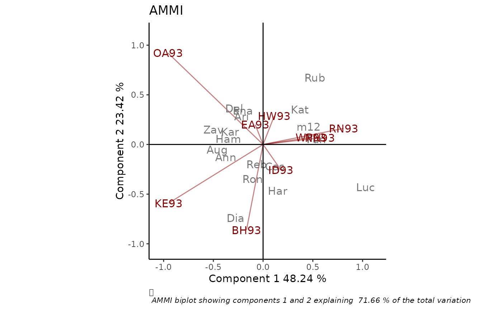

Produces classical or robust AMMI biplot as an object of class 'ggplot', with options for customization.
rAMMI(
Data,
genotype = "gen",
environment = "env",
response = "Y",
rep = NULL,
Ncomp = 2,
type = "AMMI",
colGen = "gray47",
colEnv = "darkred",
sizeGen = 4,
sizeEnv = 4,
titles = TRUE,
footnote = TRUE,
axis_expand = 1.2,
limits = TRUE,
axes = TRUE,
axislabels = TRUE
)Arguments
- Data
a dataframe with genotypes, environments, repetitions (if any) and the phenotypic trait of interest. Other variables that will not be used in the analysis can be included.
- genotype
column name containing genotypes.
- environment
column name containing environments.
- response
column name containing the phenotypic trait of interest.
- rep
column name containing replications. If this argument is `NULL` (default), replications are not considered for the analysis.
- Ncomp
number of principal components that will be used in the analysis.
- type
method for fitting the AMMI model: `"AMMI"`, `"rAMMI"`, `"hAMMI"`, `"gAMMI"`, `"lAMMI"` or `"ppAMMI"` (see References). Defaults to `"AMMI"`.
- colGen
genotype attributes colour. Defaults to "gray".
- colEnv
environment attributes colour. Defaults to "darkred".
- sizeGen
genotype labels text size. Defaults to 4.
- sizeEnv
environment labels text size. Defaults to 4.
- titles
logical, if this argument is `TRUE` a plot title is generated. Defaults to `TRUE`.
- footnote
logical, if this argument is `TRUE` a footnote is generated. Defaults to `TRUE`.
- axis_expand
multiplication factor to expand the axis limits by to enable fitting of labels. Defaults to 1.2.
- limits
logical. If `TRUE` axes are automatically rescaled. Defaults to `TRUE`.
- axes
logical, if this argument is `TRUE` axes passing through the origin are drawn. Defaults to `TRUE`.
- axislabels
logical, if this argument is `TRUE` labels axes are included. Defaults to `TRUE`.
Value
A biplot of class ggplot
Details
To overcome the problem of data contamination with outlying observations, Rodrigues, Monteiro and Lourenco (2015) propose a robust AMMI model based on the M-Huber estimator and in robusts SVD/PCA procedures. Several SVD/PC methods were considered, briefly described below, thus conveying a total of five robust AMMI candidate models:
R-AMMI: uses the L1 norm instead of the more usual least squares L2 norm, to compute a robust approximation to the SVD of a rectangular matrix.
H-AMMI: Combines projection-pursuit and robust covariance estimation techniques to compute the robust loadings. It is most adequate for high-dimensional data.
G-AMMI: Uses projection-pursuit to compute PCA estimators. The optimization is done via the grid search algorithm in the plane instead of the p-dimensional space.
L-AMMI: The idea behind this approach is to perform classical PCA on the data but projected onto a unit sphere. When the data are elliptically distributed the estimates of the eigenvectors are consistent
PP-AMMI: Uses projection-pursuit calculating the robust eigenvalues and eigenvectors without going through robust covariance estimation. The principal components can be sequentially computed and thus this method is very appealing when few genotypes are evaluated under a wide range of environmental and/or experimental conditions.
References
Rodrigues P.C., Monteiro A., Lourenco V.M. (2015). A robust AMMI model for the analysis of genotype-by-environment data. Bioinformatics 32, 58–66.
Examples
library(geneticae)
# Data without replication
library(agridat)
data(yan.winterwheat)
BIP_AMMI <- rAMMI(yan.winterwheat, genotype = "gen", environment = "env",
response = "yield", type = "AMMI")
BIP_AMMI

# Data with replication
data(plrv)
BIP_AMMI2 <- rAMMI(plrv, genotype = "Genotype", environment = "Locality",
response="Yield", rep = "Rep", type = "AMMI")
BIP_AMMI2